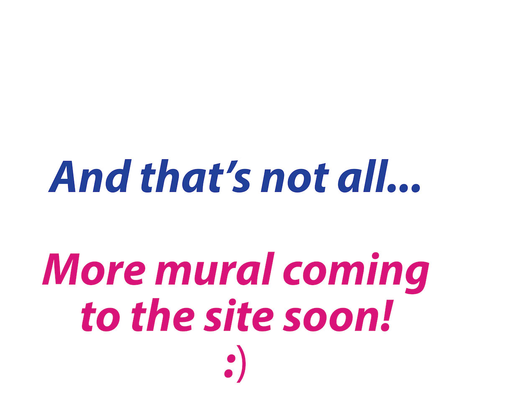
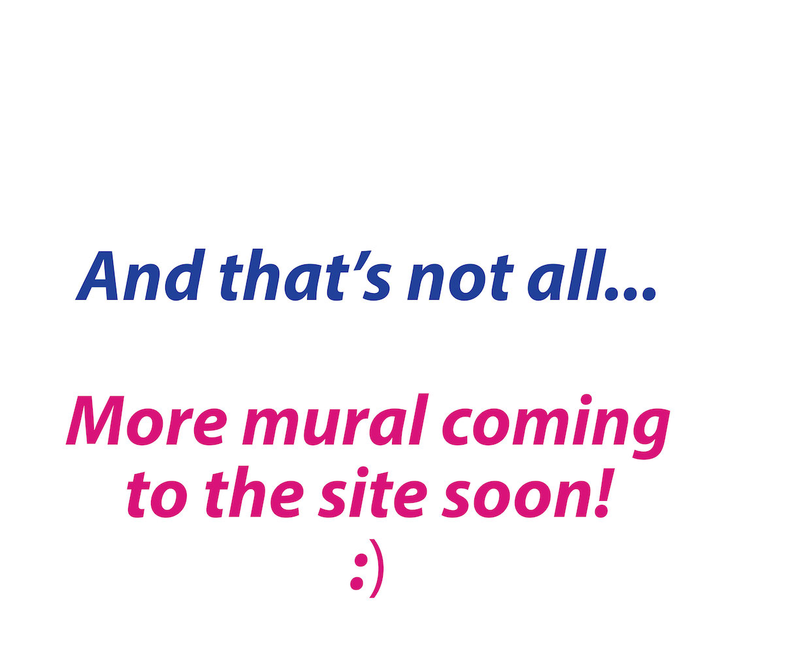

Welcome!
Nearly 200 people ages 7-70+ gave more than 3,500 hours to the Our Freedom Story mural along the Cedar River at the Waterloo Center for the Arts. Measuring more than 3,000 square feet, the Youth Art Team’s largest public mural to date commemorates Waterloo’s civil rights history.
To visit in person:
225 Commercial St, Waterloo, Iowa
Make your way to the amphitheatre, then head left along the trail (upriver).
Most of that time was spent preparing, long before the artists started painting. Here’s how Youth Art Team invested those 2,000+ hours:
The Lead Team went to St. Louis in January 2019.
This group of artists takes on extra responsibilities, tackles project tasks first, and provides leadership to all teams that participate in Youth Art Team projects.
They explored St. Louis together for three days. Their experiences prepared them to take on the enormous new river wall mural project.
“I learned more about St. Louis’s history which helped me understand our home’s history better.” – Artist, seventh grade
Teams of young artists conducted interviews.
Youth Art Team's six oldest artists conducted preliminary interviews with community members who were growing up or living in Waterloo during the 50s, 60s, and 70s. These artists helped summarize each person’s story so that younger artists could read about the person they would interview, prepare their questions ahead of time, and hold a conversation in person during a large group interview.
These interviews were the most important, honest, and beautiful part of the entire mural project experience.
“I learned that discussions about race matter as much now as ever. Young students of color need a place for their stories to be heard. And young white students need safe spaces to hear about other people’s experience in our community. I was reminded of this as I watched students’ faces and listened to their questions as they interviewed me.” – Alice Shirey, interviewee
Then 150 artists asked themselves, “How do we tell this story with our art?”
The young artists were encouraged to put themselves in the situations of the person they interviewed and the stories they told so the artists could try to imagine: What words represent how the person would have felt? What words represent what they would have had to summon up inside of themselves in order to act and try to create a better community for us?
Then they tried to figure out what colors would represent those words. How could they draw lines and shapes with those colors to show this time in Waterloo’s history in a way that people could relate to?
“I hope that everybody feels important in some way. That either they are great or someone they are related to helped participate in this, and they have some of that courage and determination in them, too. I want people all over the world to see this mural and know the history of Waterloo and that it is important. – Artist, third grade
At last it was time to paint the mural. Youth Art Team artists rotated through in teams to accomplish such a feat. Young artists painted almost every day May-June 2019 with support from adult volunteers and Youth Art Team staff, giving nearly 1,500 hours to this final stage of the creation process.
The mural is finished but the work is not!
Youth Art Team artists, volunteers, and staff are working to share the story of our community – through the Our Freedom Story mural – with as many people as possible.
You can support the work by donating to Youth Art Team, a registered 501(c)(3). (Click here for more information about donating to our organization.) We are:
constructing this website to contain interpretive materials and tools for people to use in their own contexts,
putting faces to the stories that inspired the artwork through the Peace Together project,
speaking with groups to share the stories, nurture understanding, and express Youth Art Team's foundational belief that "Love is Power" and can be trusted to transform lives and communities.
Donate!
The full team on the Youth Art Team Our Freedom Story mural project was composed of three groups: Youth Art Team artists ages 6-15 (director Heidi Fuchtman), Lowell Elementary third grade artists (teacher Amelia Smith), and Kingsley Elementary third grade artists (teacher Jennifer Hirschman).
The Our Freedom Story mural was one of three Mural Year projects that the Youth Art Team accomplished in 2018-2019. The Youth Art Team Mural Year project was supported, in part, by the Iowa Arts Council, a division of the Iowa Department of Cultural Affairs, the National Endowment for the Arts. A Teen Trust grant, awarded to Friends of the Art Center, provided funds for River Wall Mural paint.
Operating support since the mural's completion has been provided by: Arts Midwest; Black Hawk County Gaming Association; Community Foundation of Northeast Iowa; Gallagher Family Foundation; Governor Kim Reynolds and the Iowa Arts Council, a division of the Iowa Department of Cultural Affairs, through the federal CARES act; Max & Helen Guernsey Foundation; Otto Schoitz Foundation; R.J. McElroy Trust; and U.S. Bank Foundation.
Youth Art Team's ongoing work relies on individual donors like you to sustain it! We hope you'll consider making a donation. :)